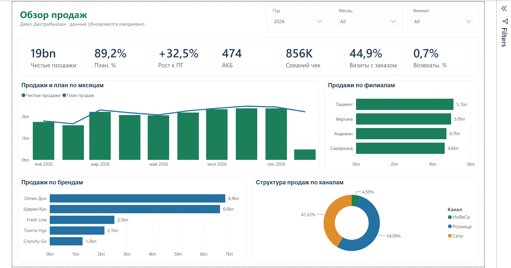

Сводка
100 USD подключение
- Работает и без Power BI
- SmartUp, Linko, Sales Doctor или 1С
- Если данные из системы не пришли, сводка так и напишет, а не покажет ноль
- Одно сообщение в день, без повторов
Power BI для дистрибьюторов · Узбекистан
Подключаю вашу учётную систему к Power BI. Данные загружаются каждое утро сами: продажи, план-факт, агенты, визиты, клиенты, склад и дебиторка. Без выгрузок в Excel и ручных сводок.

Все скриншоты сделаны на демо-данных вымышленной компании. На встрече покажу на ваших.
Цифры из демо-отчёта, сум.
18 страниц с данными и страница «Содержание» с кнопками перехода, всё в одном файле Power BI. На каждой странице фильтры по году, месяцу и филиалу. Нажмите на отчёт, чтобы увидеть его крупно.
Каждый показатель считается одинаково на всех страницах. Продажи считаются только по доставленным заказам, возвраты вычитаются.
Плюс служебные расчёты: рабочие дни, даты последней покупки и оплаты, координаты.
Ничего не нужно выгружать руками. Каждое утро данные сами идут из вашей системы в базу на вашем компьютере, а Power BI обновляется из неё.
Посмотреть, как это работает →
Несколько систем можно подключить в одну базу, например SmartUp и 1С.
Каждое утро руководитель получает одно короткое сообщение: сколько продали вчера, успеваем ли план месяца, кто из агентов отстаёт, кто давно не платит и какой товар заканчивается. Открывать отчёт не нужно.
100 USD подключение
Пример на демо-данных. Абонентская плата только за сводку: она держит её в работе и правит, если меняется ваша система.
Сводка показывает цифры. ИИ-аналитик их читает: находит причину, называет конкретного агента и клиента и пишет задания на сегодня — вам, супервайзеру и агентам. Помнит вчерашние поручения: если долг так и не оплачен, напишет «уже третий день» и передаст задачу выше. По понедельникам — обзор недели: филиалы, лучшие и слабые агенты, клиенты, товары, деньги и три приоритета.
200 USD подключение
Пример на демо-данных. Включает утреннюю сводку. Абонентская плата держит аналитика в работе и настраивает его под ваши замечания.
Одна фиксированная цена за проект. Абонентской платы нет, отчёты и обновление остаются вашими.
1 000 USD
2 000 USD
от 3 500 USD
Асомиддин Низамов, BI-аналитик. Более 9 лет в аналитике дистрибуции и продаж.
Напишите, какую систему вы используете, и договоримся о встрече.